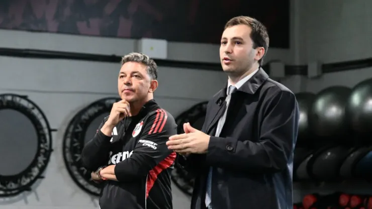
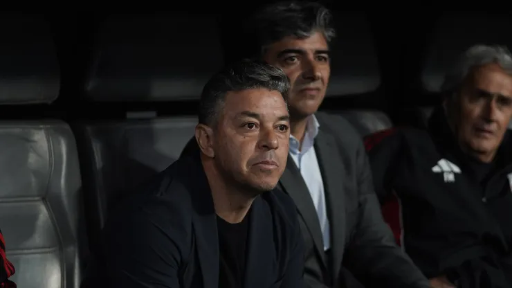
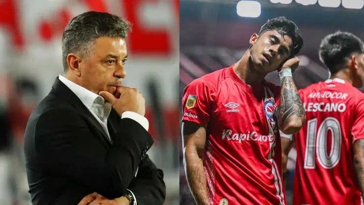
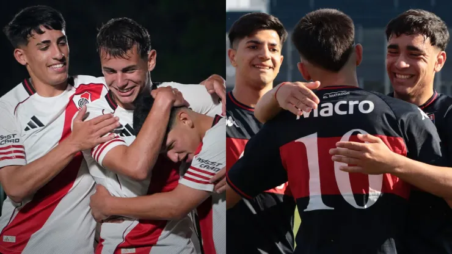
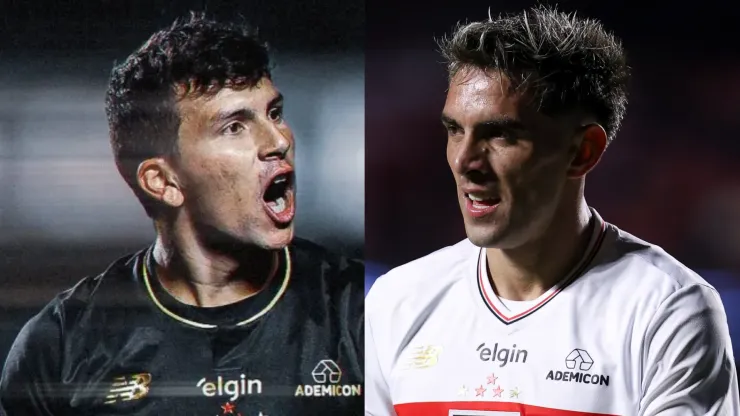
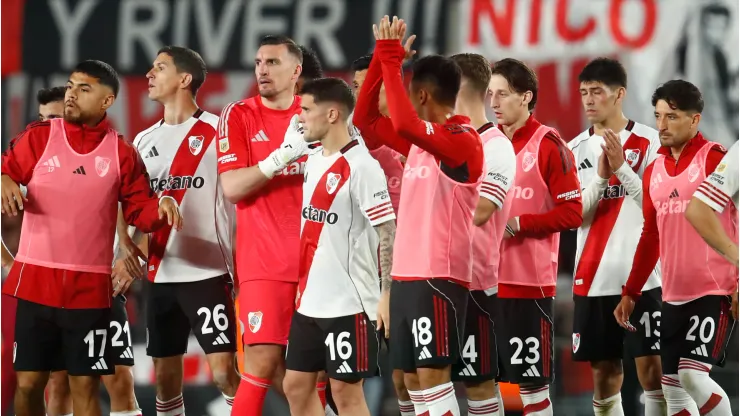
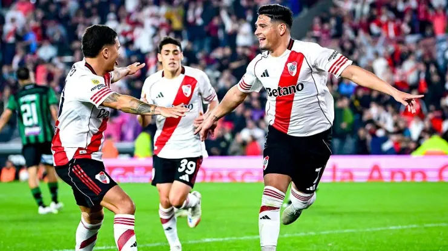

Últimas Noticias

Stefano Di Carlo se volvió a reunir con Marcelo Gallardo en River Camp tras el Superclásico

¿Habrá sorpresas? La posible formación de River frente a Vélez

El inesperado pedido que hará Argentinos Juniors de cara a la última fecha

La Reserva de River enfrenta a Tigre en los octavos de final: día, hora y dónde ver el partido por el Torneo Proyección

Galoppo está en el medio: qué piensa hacer River con Enzo Díaz y Gonzalo Tapia

Paulo Díaz, Galarza, Enzo Pérez y el resto en River: hasta cuándo tienen contrato y cuáles son sus cláusulas de salida
